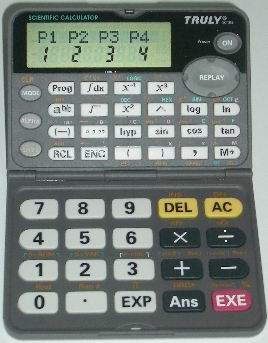

Casio fx-3650P/3950P簡介
Truly SC185 / SC183簡介
|
|
 | |
| Truly SC183 | Truly SC185 | Casio fx-3650P |
Casio fx-3650P / fx-3950P及Truly SC183 / SC185為可編程計數機，四部計數機的計算功能差不多完全相同，有四個程式位置(P1、P2、P3及P4)，程式總記憶為360 位元。與舊款會考計數機比較，程式方面確有不少改進地方，首先程式較易閱讀，因此編寫及修改程式較為容易，特別適合對程式了解不深入的朋友。程式的流程控制亦加入 容易使用的無條件轉移(Goto及Lbl)及關係運算子(>、≧、≠及=)，較舊機的流程控制加強了不少。最後的是編寫程式可以指定所需要的模式(SD、REG、CMPLX及BASE)，編寫程式會較舊款fx-3900PV方便及彈性，特別在新增複數模式中，編寫有關複數的程式非常容易及簡單。
內置功能數目雖然不及Sharp EL-506V，不過亦算豐富，與舊款casio會考機比較，除了一般的科學計算功能及七個數字記憶外，新加入了算式重現(REPLAY)、小數轉換分數、簡易複數計算、微積分計算及六種回歸分析等功能，不過某些操作上略為煩瑣一點，特別是統計及回歸模式計算。
fx-3650P/3950P計數機在運算上有不少問題，例如:有分數計算正負值出錯問題、記憶及程式自動被清除、積分計算問題等等，這些都是令使用者感到 擔心及困擾的問題。
SC183及SC185雖然沒有上述3650P的問題，整體計算速度亦比fx-3650P快，但亦有一些設計上的問題，2007年8月推出的新版SC185及2009年6月推出SC183已經修正了部份問題，大家若購買這兩款計算機亦要留意這方面的問題。SC185較特別之處是平時不使用時是摺合起來，使用時才揭開，機身的一邊是平放，另一邊是靠背面的支架承托而傾斜，所以即使從較低的角度亦可以清楚觀看螢幕，使用上較為方便。不過設計上亦有缺點，計數機揭開時，兩邊不能完全水平放置(好像一般計數機這樣使用)，一旦承托的支架損毀(有不少網友都遇過這個問題)，計數機在按鍵時會失去平衡及穩定，使操作帶來不便，而事實上斜面上按鍵，壓力會集中在塑膠的支架上，因此可能會較易耗損。另外在摺合起來時支架不是鎖住，較易意外地將支架打開，若果放置得不好，再加上碰撞，相信支架會較易損毀。
6. Casio網頁: fx-3650P程式集 (Your Partner to Explore Math)
8. Truly SC-185(2007年8月)新版用後報告及評論
11. SC185程式自動被覆蓋問題
13. fx3650P程式自動消失問題
15. fx3650P誤差修正問題
16. fx-3650P假分數顯示問題(新)
17. fx-3650P 自我檢測功能
18. WebCal 會考計數機論壇